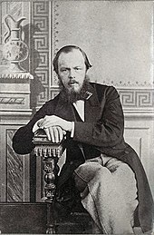

Fyodor Mikhailovich Dostoevsky (tiếng Nga: Фёдор Миха́йлович Достое́вский nghe, thường phiên âm là “Đốt-xtôi-ép-xki”) là nhà văn nổi tiếng người Nga, sinh ngày 11 tháng 11 (lịch cũ: 30 tháng 10), 1821 và mất ngày 9 tháng 2 (lịch cũ: 28 tháng 1), 1881. Cùng với Lev Tolstoy, Dostoevsky được xem là một trong hai nhà văn Nga vĩ đại thế kỷ 19. Các tác phẩm của ông, như Anh em nhà Karamazov hay Tội ác và hình phạt đã khai thác tâm lí con người trong bối cảnh chính trị, xã hội và tinh thần của xã hội Nga thế kỷ 19. Ông được giới phê bình đánh giá rất cao, phần lớn xem ông là người sáng lập hay là người báo trước cho chủ nghĩa hiện sinh thế kỷ 20, chẳng hạn, Walter Kaufman xem Bút ký dưới hầm là “tác phẩm về chủ nghĩa hiện sinh tuyệt vời nhất từng được viết”.

.Tuy nhiên ở Liên Xô, sau Cách mạng tháng Mười, người ta hầu như phủ nhận toàn bộ các sáng tác của Dostoevsky. Từ 1972, tác phẩm của Dostoevsky mới được nhìn nhận lại và đánh giá đúng mức ở quê hương của mình.
Những năm đầu đời
Dostoevsky sinh năm 1821 ở Moskva, là con trai thứ hai trong gia đình có 7 anh em. Cha ông là Mikhail, vốn dòng dõi quý tộc nhưng đã sa sút, một bác sĩ quân y sau khi nghỉ hưu làm việc tại bệnh viện Maryinski chuyên chữa trị các người nghèo. Mẹ ông là Maria Feodorovna, con một thương gia. Bệnh viện Maryinski, nơi Dostoevsky sống hồi nhỏ, nằm ở chỗ tồi tệ nhất của thành phố, một khu vực bao gồm một nghĩa trang cho tội nhân, một trại thương điên và một cô nhi viện cho trẻ sơ sinh.Khung cảnh khu phố này đã để lại một ấn tượng lâu dài lên thời trẻ Dostoevsky, sớm quan tâm tới những người nghèo, bị áp bức và thống khổ. Dù bị bố mẹ cấm, Dostoevsky vẫn thích lẻn ra vườn của bệnh viện, nơi những bệnh nhân đau khổ ngồi sưởi nắng. Cậu bé Dostoevsky thích dành thời gian ngồi bên các bệnh nhân và lắng nghe các câu chuyện của họ.
Có nhiều câu chuyện về cách cha Dostoevsky đối xử với những đứa con của mình, nhưng khó kiểm chứng về tính xác thực của chúng vì có lẽ chúng dựa trên tác phẩm Anh em nhà Karamazov hơn là đời thực của tác giả. Tuy vậy, những thư từ và tường thuật cho thấy giữa Dostoevsky và bố có một mối quan hệ khá tốt đẹp.
Năm 1837, mẹ của Dostoevsky mất vì bệnh lao. Ông Mikhail quyết đinh gửi các con trai của mình tới Học viện Kỹ thuật Quân sự ở Saint Peterburg. Năm 1839, ông nghe tin bố mình qua đời. Mặc dù chưa bao giờ được kiểm chứng, một số người tin rằng Mikhail Dostoevsky chết bởi chính những người nông nô của ông. Theo một câu chuyện, trong một cơn say rượu, ông đã làm họ phẫn nộ và họ đã giữ ông ta, đổ vodka vào miệng ông tới khi chết. Những tình tiết tương tự được Dostoevsky miêu tả trong Bút ký dưới hầm. Một số khác lại tin rằng ông đã chết vì những nguyên nhân tự nhiên, còn câu chuyện sát nhân là do một người chủ trại láng giềng bịa đặt để có thể mua các tài sản với giá rẻ. Vài người lập luận rằng những tính cách của người cha đã ảnh hưỏng lớn tới nhân vật Fyodor Pavlov Karamazov trong Anh em Karamazov, nhưng những ý kiến này chịu nhiều chỉ trích. Dù sao đi nữa sự kiện này đã ảnh hưởng lớn tới tâm hồn ông, đó là một cách giải thích cho chủ đề tội ác luôn xuất hiện trong các tác phẩm của Dostoevsky.
Những sáng tác đầu tiên
Dostoevsky mắc chứng động kinh. Cơn động kinh đầu tiên xảy ra năm ông lên chín và thỉnh thoảng lại xuất hiện trong suốt cuộc đời ông. Trải nghiệm bản thân đã trở thành cơ sơ cho việc mô tả cơn động kinh của các nhân vật như Hoàng thân Myshkin(tiếng Việt thường phiên âm là Mưskin) trong tiểu thuyết Thằng ngốc hay Smerdyakov trong Anh em nhà Karamazov.
Ở Học viện Kỹ thuật Quân sự Saint Peterburg, ông phải học toán học, một môn ông xem thường. Tuy vậy, ông cũng học văn học từ Shakespeare, Pascal, Hugo, Balzac, và E.T.A Hoffmann. Tập trung vào các lĩnh vực khác, Dostoevsky vẫn làm tốt các bài kiểm tra toán và nhận được học bổng năm 1841. Năm đó, ông được cho là đã viết hai vở kịch chịu ảnh hưởng của nhà thơ/ nhà viết kịch lãng mạn Đức Friedrich Schiller là Mary Stuart và Boris Gordunov. Các vở kịch này chưa sưu tầm được. Dostoevsky tự miêu tả mình thời kỳ này như một người mơ mộng và tôn sùng Schiller. Nhưng sau này, ở thời kỳ đỉnh cao tài năng, ý kiến của ông đã thay đổi và thỉnh thoảng ông chế giễu Schiller.
Sau khi tốt nghiệp, Dostoevsky được điều về một đơn vị công binh, nhưng sau đó một năm ông xin giải ngũ.Khoảng thời gian này, Dostoevsky hoàn thành việc dịch cuốn Eugénie Grandet của Balzac nhưng không được chú ý lắm.
Khoảng cuối năm 1844, Dostoevsky bắt tay vào viết tiểu thuyết.Tác phẩm đầu tiên ra đời một năm sau đó, [[Những kẻ bần hàn]] (Бедные люди). Khi mới in dưới dạng các phần trên tập san Sovremennik(Hiện đại),cuốn sách đã rất được hoan nghênh. Theo chuyện kể, biên tập viên của tờ bào, nhà thơ Nikolai Nekrasov đi vào văn phòng của nhà phê bình Vissarion Belinsky và nói: “Một Gogol mới hiện”. Cuốn tiểu thuyết được xuất bản thành sách những năm sau đó đã khiến Dostoevsky sơm nổi tiếng ở tuổi 24. Tuy nhiên, cuốn truyện vừa Con người kép (Двойник) và những tác phẩm ông viết mấy năm sau đó (Tiểu thuyết chín chữ, Ông Prokharchin, Bà chủ,…) không được đánh giá cao. Nhiều người đã cảm thấy tiên đoán của Belinsky, rằng F.Dostoevsky sẽ thành một trong những nhà văn Nga vĩ đại nhất có vẻ đã lầm lẫn.
Tù đày ở Siberi
Năm 1847, Dostoevsky tham gia vào nhóm Petrashevsky, một diễn đàn do Mikhail Vasilevich Petrashevsky – một người chịu ảnh hường của Fourier khởi xướng. Như phần lớn các diễn đàn của giời trí thức ở Peterburg bấy giờ, đó là một tập hợp phức tạp của trí thức, sinh viên, viên chức,… chủ yếu thảo luận văn học và nhất là triết học phương Tây, cũng như một loạt câc vấn đề xã hội khác. Tuy không có quan điểm chính trị rõ rệt, phần lớn hội viên bất mãn với chế độ Nga hoàng. Bất an về cuộc cách mạng 1848 ở châu Âu, Nga hoàng Nicholas I đã quyết định đàn áp các diễn đàn như vậy. Ngày 23 tháng Tư năm 1849, Dostoevsky bị bắt.
Sau 9 tháng nằm tù trong hầm pháo đài Petropavlovskaya, ngày 16 tháng Mười một, Dostoevsky cùng 15 người khác bị đưa ra tòa và kết án tử hình. Ngày hành hình, họ đứng trong thời tiết lạnh giá để chờ đợi một loạt súng mà vào phút chót bị bãi bỏ bởi một lệnh ân xá của Nga hoàng. Thay vào đó, họ bị kết án 4 năm lao động khổ sai tại Omsk, thuộc tây nam miền Sibir. Sau này Dostoevsky có mô tả cho người em của mình rằng những năm tháng khắc nghiệt đó với ông như “bị đóng trong quan tài”.
Về trại lính đổ nát mà “đáng lẽ phải sụp xuống từ một năm trước”, ông kể lại:
Mùa hè, ngột ngạt không chịu được. Mùa đông, rét không thể nói hết. Tất cả các tầng đều đã hỏng. Rác dày tới một inch, người ta có thể bị trượt ngã… Chúng tôi được đóng gói như cá trích trong thùng. Không có đủ không gian để mà xoay người…
Ông ra khỏi nhà tù năm 1854, nhưng phải phục vụ trong Trung đoàn Siberia. Ông đã trải qua 5 năm kế tiếp như là một binh nhì (sau thành trung úy) ở Tiểu đoàn 7, đóng tại lâu đài của vùng Semipalatinsk(nay thuộc Kazakhstan). Thời gian ở đây, ông bắt đầu mối quan hệ với Maria Dmitrievna Isayeva, vợ một người bạn. Họ kết hôn vào tháng Hai 1857, khi người chồng qua đời.
Những trải nghiệm thời gian ở tù và quân ngũ đã làm thay đổi lớn niềm tin tôn giáo và chính trị của ông. Trước hết, ông đã tỉnh ngộ về những tư tưởng “phương Tây”, quyết định từ bỏ trào lưu triết học Tây Âu đương thời, thay vào đó công hiến những sáng tác của mình cho các “giá trị Nga” truyền thống, trọng nông như khái niệm Sobornost của Chủ nghĩa Slav(Slavophil). Nhưng còn mạnh mẽ hơn là sự tăng cường đức tin Cơ đốc, nhất là Chính thống giáo (Sau này ông mô tả sự chuyển biến này trong truyện ngắn Bác nông dân Marey). Từ đây Dostoevsky đứng trên thái độ phê phán hơn với triết học châu Âu đường thời, đồng thời có thái độ khắc nghiệt với với các trào lưu hư vô và xã hội chủ nghĩa. Về mặt xã hội, ông quay ra chỉ trích những người cách mạng, nghi ngờ những cải cách xã hội và ngả sang những quan điểm bảo thủ.
Những năm chính trong sự nghiệp
Tháng Mười hai 1860, Fyodor Dostoevsky trở về Saint Peterburg, bắt tay vào xuất bản một loạt các tạp chí văn học như Время(Thời đại) và Эпоха (Kỷ nguyên) với người anh trai Mikhail nhưng không thành công. Số cuối cùng bị hủy bởi bài tường thuật của nó về Cuộc nổi dậy tháng Giêng ở Ba Lan năm 1863. Năm đó ông đi du lịch châu Âu và thường xuyên chơi bạc trong các casino. Ông đã gặp Apollinaria Suslova, một người đàn bà đẹp mà ông đã lấy làm hình mẫu cho hai nhân vật tên Katerina Ivanovna trong Anh em nhà Karamazov và Tội ác và hình phạt. Dostoevsky chìm sâu vào trầm uất và bài bạc. Ông thua rất nhiều, có câu chuyện kể rằng ông đã hoàn tất Tội ác và hình phạt với một sự gấp gáp điên cuồng vì mong mỏi khoản tiền trả trước của nhà xuất bản. Cuối cùng, ông thật sự rỗng túi. Trong tuyệt vọng, ông đã viết Con bạc (Игрок) để đáp ứng mong muốn của nhà xuất bản Stellovsky, khi họ tuyên bố sẽ tranh chấp quyền tác giả tất cả các sáng tác của Dostoevsky nếu ông không viết tiếp cho họ.
Dostoevsky trở về nước Nga sau cái chết của vợ (1864) và anh trai Mikhail (1865). Thời gian này, vì tiếp tục vướng vào cờ bạc, ông mắc nợ rất nhiều và phải sáng tác để trả nợ, nhưng không vì thế mà ông dễ dãi với những sáng tác của mình.
Năm 1864 xuất hiện cuốn Bút ký dưới hầm (Записки из подполья). Năm 1865, Dostoevsky bắt đầu viết Tội ác và hình phạt[9] (Преступление и наказание), một trong những tác phẩm quan trọng nhất của ông. Tội ác và hình phạt được đăng từng kỳ trên tờ báo “Người đưa tin Nga”.
Vì nhu cầu viết nhanh hơn, theo lời khuyên của một người bạn, ông quyết định tuyển một thư ký. Đó là Anna Grigorievna Snitkina, một cô gái rất trẻ, mới 20 tuổi. Năm 1867, Dostoevsky kết hôn với Anna và cùng nhau đi du lịch châu Âu. Thời gian này ông sáng tác cuốn Thằng ngốc (Идиот).
Năm 1868, Anna sinh hạ đứa con gái Sonya nhưng bé gái này bị chết yểu sau vài tháng. Về sau, Dostoevsky có thêm 3 con: con gái Lyubov sinh năm 1869, con trai Fyodor sinh năm 1870 và con trai Alyosha sinh năm 1875.
Fyodor Dostoevsky trở lại Sankt-Peterburg vào năm 1871 và liên lạc với các nhóm bảo thủ. Trong hai năm 1871 và 1872, ông viết tác phẩm Lũ người quỷ ám (Бесы). Sức khỏe của ông luôn yếu kém sau những năm lao tù tại miền Sibir, chứng bệnh động kinh thêm nặng và thời gian này ông còn mắc bệnh lao phổi, rồi căn bệnh trở thành ung thư phổi.
Năm 1880, ông xuất bản cuốn Anh em nhà Karamazov (Братья Карамазовы). Đó là cuốn tiểu thuyết cuối cùng và được xem là lớn của ông. Với tác phẩm này, Dostoevsky được toàn thế giới công nhận là một trong những đại văn hào nước Nga.
Dostoevsky mất năm 1881 tại Sankt-Peterburg.
Câu nói nổi tiếng: Cái đẹp cứu rỗi thế giới. Còn được dịch: Cái đẹp sẽ cứu thế giới.
Tác phẩm nổi tiếng
• Những kẻ bần hàn (Бедные люди; tiếng Anh: Poor Folk; tiếng Pháp: Les Pauvres Gens – 1846)
• Con người kép (Двойник; The Double; Le Double – 1846)
• Đêm trắng (Белые ночи, bản dịch khác: Những đêm trắng; White Nights; Les Nuits blanches – 1848)
• Ghi chép từ Ngôi nhà chết (Записки из Мертвого дома; The House of the Dead; Souvenirs de la maison des morts – 1862)
• Những kẻ tủi nhục (Униженные и оскорблённые, tạm dịch: Những kẻ bị lăng mạ và tật nguyền; The Insulted and Humiliated; Humiliés et offensés – 1861)
• Con bạc (Игрок; The Gambler; Le Joueur – 1867)
• Bút ký dưới hầm (Записки из подполья; Notes from Underground; Les Carnets du sous-sol – 1864)
• Tội ác và hình phạt (Преступление и наказание; Crime and Punishment; Crime et Châtiment – 1866)
• Thằng ngốc (Идиот; The Idiot; L’Idiot – 1868)
• Lũ người quỷ ám (Бесы; The Possessed; Les Possédés – 1872)
• Anh em nhà Karamazov (Братья Карамазовы; The Brothers Karamazov; Les Frères Karamazov – 1880)
Cả tập bút kí này lẫn tác giả của nó cố nhiên chỉ là tưởng tượng. Tuy nhiên, nếu quan sát những hoàn cảnh trong đó xã hội ta được hình thành, thì mẫu người tương tự như tác giả tập bút kí này chẳng những có thể, mà còn nhất định phải có trong xã hội ta.
Tôi muốn phác họa rõ nét hơn bình thường một chút cho độc giả thấy một trong những nhân vật của thời đại vừa qua, một trong những người đại diện của thế hệ còn sống đến bây giờ. Trong phần đầu có tên gọi Dưới hầm này, nhân vật đó sẽ tự giới thiệu về mình, trình bày những quan điểm của y và dường như có ý muốn giải thích những lý do khiến y được sinh ra trong xã hội chúng ta. Còn phần hai mới chính là những hồi ức về một vài biến cố trong đời y.
Fiodor Mikhailovich Dostoievski – 1864